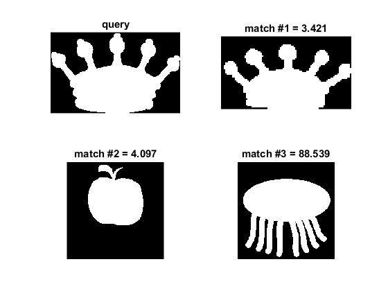

Shape context for shape matching
This program demonstrates a method for shape comparison based on Shape Context.
We use 20 sample images from OpenCV: https://github.com/opencv/opencv/tree/3.1.0/samples/data/shape_sample/*.png
Sources:
Read set of images
fpath = fullfile(mexopencv.root(),'test'); files = dir(fullfile(fpath,'shape*.png')); imgs = cell(1, numel(files)); for i=1:numel(files) imgs{i} = cv.imread(fullfile(fpath, files(i).name), 'Grayscale',true); end
Extract contours
contours = cell(size(imgs)); for i=1:numel(imgs) cont = cv.findContours(imgs{i}, 'Mode','List', 'Method','None'); cont = [cont{:}]; cont = cat(1,cont{:}); contours{i} = cont; % flattened 2D points end
use the same number of points for all images
[NN,~] = cellfun(@size, contours); npts = min(NN); % 300 for i=1:numel(contours) cont = contours{i}; N = size(cont,1); % uniformly sample same number of points idx = randperm(N, npts); cont = cont(sort(idx),:); % reshaped into 2-channels as 1xNx2 contours{i} = permute(cont, [3 1 2]); end
query image (provide any number between 1 and 20 for selecting an image in the folder)
indexQuery = 11;
compute distance between query and all images
if true sc = cv.ShapeContextDistanceExtractor(); else sc = cv.HausdorffDistanceExtractor(); end dist = zeros(size(contours)); hWait = waitbar(0, 'Calculating distances'); for i=1:numel(contours) if i == indexQuery continue; end waitbar(i/numel(contours), hWait); tic dist(i) = sc.computeDistance(contours{indexQuery}, contours{i}); toc end close(hWait) % sorted matches [~,ord] = sort(dist);
Elapsed time is 5.400297 seconds. Elapsed time is 5.340579 seconds. Elapsed time is 5.337628 seconds. Elapsed time is 5.352275 seconds. Elapsed time is 5.587719 seconds. Elapsed time is 5.510961 seconds. Elapsed time is 5.550998 seconds. Elapsed time is 5.539079 seconds. Elapsed time is 5.418877 seconds. Elapsed time is 5.475764 seconds. Elapsed time is 5.526154 seconds. Elapsed time is 5.485514 seconds. Elapsed time is 5.548504 seconds. Elapsed time is 5.548055 seconds. Elapsed time is 5.555361 seconds. Elapsed time is 5.491198 seconds. Elapsed time is 5.485358 seconds. Elapsed time is 5.436754 seconds. Elapsed time is 5.491954 seconds.
show all distances (sorted)
if ~mexopencv.isOctave() %HACK: not implemented in Octave t = array2table(dist(:), 'VariableNames',{'Distance'}, ... 'RowNames',cellstr(num2str((1:numel(dist))'))); display(sortrows(t)) end
20×1 table
Distance
__________
11 0
12 3.4207
1 4.0969
9 88.539
5 242.81
15 263.47
10 274.33
6 421.81
16 486.32
2 565.28
8 1669.6
7 2154.4
20 30147
18 38864
19 55634
13 88106
14 97760
17 1.0517e+05
4 1.2892e+05
3 1.8379e+05
show best 3 image matches
subplot(221), imshow(imgs{indexQuery}), title('query')
for i=(1:3)+1
subplot(2,2,i), imshow(imgs{ord(i)})
title(sprintf('match #%d = %.3f', i-1, dist(ord(i))))
end